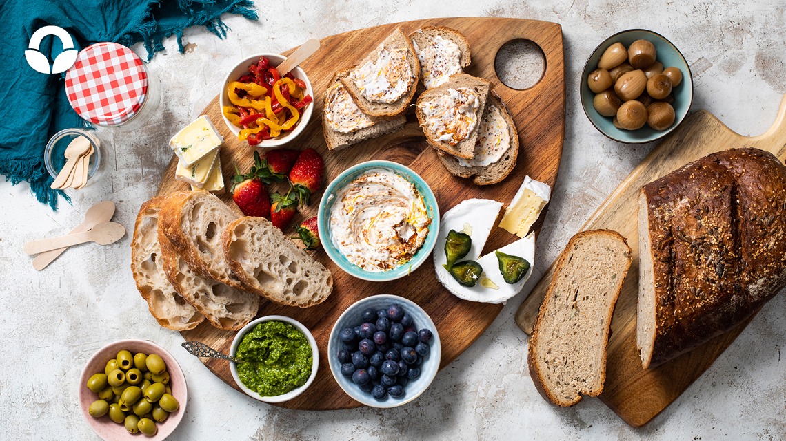

By Order of the Garrison: Ploughman's Platter

"Taste the Tradition: By Order of the Garrison Ploughman's Platter at The Garrison Tavern."
Indulge in a classic British delight that brings together flavors of the countryside. Our Ploughman's Platter, a timeless favorite, combines artisanal cheeses, pickles, cured meats, and more. It's a taste of British tradition served with pride and a nod to the Peaky Blinders era.
Ingredients:
- Assorted artisanal cheeses (e.g., cheddar, Stilton)
- Slices of cured meats (e.g., ham, salami)/li>
- Pickled onions
- Branston pickle or chutney
- Sliced crusty bread or baguette
- Fresh apple slices
- Hard-boiled eggs
- Mixed salad greens
Recipe Instructions:
- Prepare the Platter:
- Arrange the assorted cheeses, cured meats, pickled onions, Branston pickle or chutney, sliced bread or baguette, fresh apple slices, hard-boiled eggs, and mixed salad greens on a large platter./li>
- Serve:
- Present the Ploughman's Platter as an inviting and shareable dish.
Enjoy "By Order of the Garrison: Ploughman's Platter," a taste of British tradition and a nod to the Peaky Blinders era, only at The Garrison Tavern.